BACI evaluation Baviaanskloof
Jasper Van doninck, Trinidad del Río-Mena, Wieteke Willemen, Wietske Bijker
Source:vignettes/articles/BACI_Baviaanskloof.Rmd
BACI_Baviaanskloof.Rmd
library(spatialBACI)
library(terra)
#> terra 1.8.86The Baviaanskloof dataset
We here use a part of the Baviaanskloof dataset used in del
Río-Mena et al., 2021, included in the spatialBACI
package, to demonstrate a pixel-based before-after-control-impact (BACI)
evaluation using the package. The Baviaanskloof dataset contains the
sites of large-scale spekboom (Portulacaria afra) revegetation
in the semi-arid Baviaanskloof Hartland Bawarea Conservancy,
South-Africa. Attributes the vector dataset indicate in which year the
revegetation was undertaken by the different restoration organizations
active in the area (Commonland, Living Land, Grounded) and whether
lifestock grazing exclusion was implemented as a restoration activity.
As an example, we here select the sites revegetated in 2012 that were
not subject to lifestock grazing exclusion.
data(baviaanskloof)
baviaanskloof <- unwrap(baviaanskloof)
year <- 2012
impact_sites <- baviaanskloof[baviaanskloof$Planting_date==year & baviaanskloof$Lifestock_exclusion==0]
other_sites <- baviaanskloof[baviaanskloof$Planting_date!=year | baviaanskloof$Lifestock_exclusion==1]
plot(baviaanskloof, "Planting_date", xlab="Longitude", ylab="Latitude")
lines(impact_sites, lwd=2)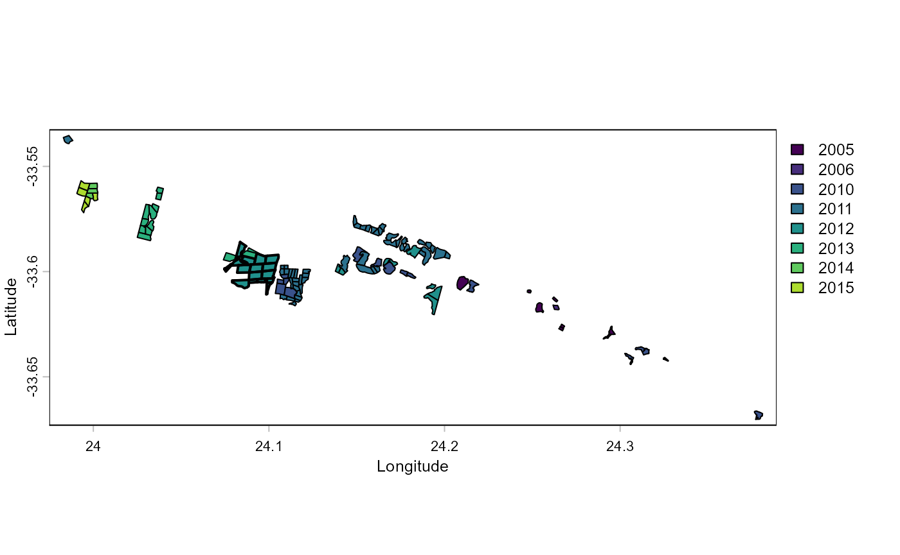
Defining impact and control units
The spatialBACI package requires the user to define the
spatial unit at which the analysis will be performed. The options for
this are the pixel unit (using raster-based analysis) or the
polygon/point unit (using vector-based analysis). The latter can be
useful when working with extensive networks of fixed monitoring sites
from which the control sites can be expected. One of the advantages of
the pixel unit is that it is not required that candidate control sites
are predefined. Another advantage is that, depending on the size of
impact sites and spatial resolution of the used remotely sensed
datasets, information on impact within an impact site can be assessed.
For this example we will use pixels as the spatial unit of analysis and
reporting.
When using a raster-based analysis, the first choice the user will
have to make is the spatial resolution of the pixel units. We here
choose a spatial resolution of 60m, since this is a resolution to which
several Earth Observation datasets (e.g., Landsat, Sentinel-2) can be
aggregated. The next step is to identify the area from which the control
pixels for the Before-After-Control-Impact an be selected. The
spatialBACI package provides several options for this. The
first option is by providing a spatial window around the impact units,
the second is providing a polygon identifying the area from which to
select the control pixels. The package also provides options to exclude
areas from use as control in the BACI analysis. This exclusion can be
based on user-provided polygons, or buffer area around the impact sites
(e.g., to eliminate the effect of misregistration of impact sites or of
positive or negative adjacency effects). All these options to include or
exclude candidate control units can be combined based on the user’s
terrain knowledge and data availability in the
create_control_candidates() function. In this example, we
set a window of 5 km around the sites reforested in 2012 (with the
control_from_buffer argument) and exclude areas restored in
the other years as control pixels (with the control_exclude
argument). Finally, we use the argument
exclude_impact_buffer to exclude pixels in a buffer of 300
m around the impact sites for selection as control units. The
create_control_candidates function also allows us the
specify the Coordinate Reference System (trough the crs
argument) of the reference raster at which the analysis will be done.
This can be useful if, e.g., the user wants to use a national reference
system. In our example we don’t provide the crs parameter, in which case
the UTM zone of centroid of the impact sites will be used. Setting the
round_coords argument to -2 sets the origin of the output
SpatRaster to the closest 100 m, and setting the
sample_control argument to 0.5 results in a random sampling
of 50% of the candidate control pixels, which can be useful to reduce
computational load for large study areas.
impact_control_cands <- create_control_candidates(impact_sites,
resolution=60,
control_from_buffer=5000,
control_from_include=NULL,
control_exclude=other_sites,
exclude_impact_buffer=300,
round_coords=-2,
sample_control=0.5)
plot(impact_control_cands)
lines(project(impact_sites, impact_control_cands))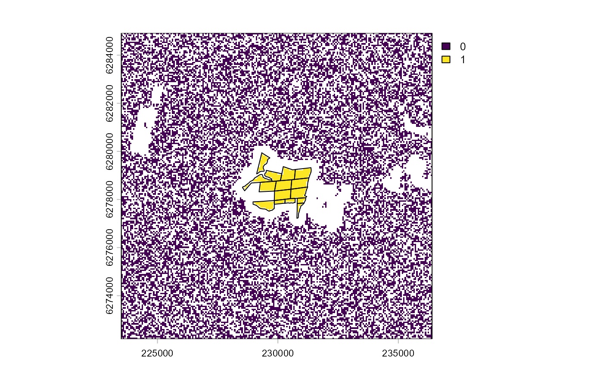
The resulting plot shows the impact units/pixels (1), the candidate
control units/pixels (0), and the pixels excluded from analysis in
white. Notice that the plot shows UTM coordinates, rather than the
geographic coordinates of the Baviaanskloof reference dataset. In
general, the spatialBACI package will automatically check
the crs of used spatial datasets and reproject when required.
Control-Impact Matching
In impact assessment using control-impact (of
before-after-control-impact) schemes, it is crucial that the control
units are carefully selected so that their characteristics only differ
from those of the impact group by the received “treatment” (in our case
a restoration intervention). This is in the spatialBACI
package done by specifying a set of covariates to be used in the
matching analysis. Ideally, users should include “all covariates likely
to impact both the selection to the treatment and the outcome of
interest” (Schleicher
et al., 2019).
For the Baviaanskloof example, we use a limited number of matching
covariates. Because we restricted the search window for control units to
a relatively small area around the impact sites, we assume that climatic
variation will be small and mostly induced by local topography.
Topographic slope and aspect may also determine whether or not a site is
selected for revegetation or determine the success of the revegetation
intervention. This terrain data can be extracted from the NASA Digital
Elevation Model (DEM) based on SRTM data using the dem()
function. Unless specified otherwise, the DEM will be obtained from
Microsoft’s Planetary Computer. The user can also specify the terrain
derivatives to be calculated (by default the slope and the aspect), and
whether the aspect should be transformed to “northness” and “eastness”
by applying the cosine and sine function on it (default) or not.
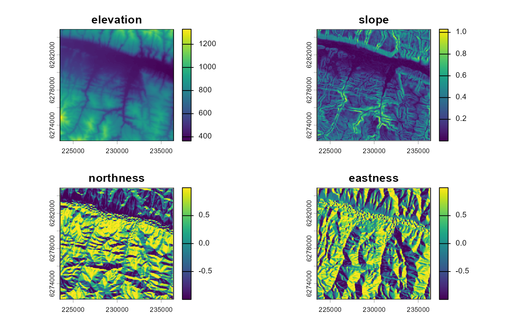
We also included land cover as a matching covariate. This will ensure
that control pixel are selected from the same landcover type
(i.e. “rangeland”). Note that in the current implementation of the
lulc() function, the 9-class land use land cover layer from
Impact Observatory is used. This product is first generated for the year
2017, so we assume no change in land cover change between the
intervention year (2012) and 2017. Given that terrain revegetated with
spekboom will still be classified as “rangeland” this is not an issue in
this example, but it may be a problem for other situations.
landcover_matching <- lulc(impact_control_cands, year=year)
#> Warning in .local(x, year, endpoint, collection, assets, authOpt, ...): Land
#> cover product io-lulc-9-class currently has data 2017-2022. 2017 selected.
plot(landcover_matching)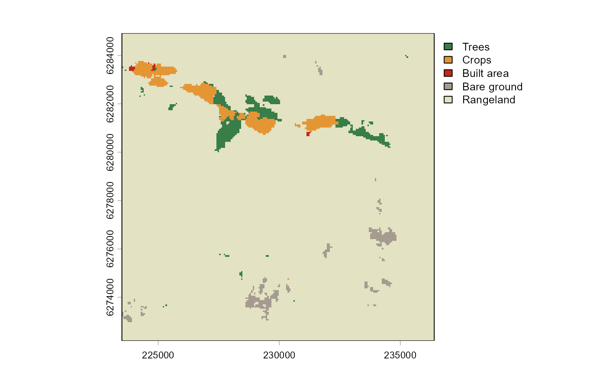
Distance to roads or settlements can explain the anthropogenic
pressure on an area. The spatialBACI package therefore
includes functions to calculate the distance to the nearest road
(osm_distance_roads()) or nearest settlement
(osm_distance_places()) based on OpenStreetMap data. For
this example, we include the distance to the nearest road of OSM
category “track” or higher as an environmental covariate in the matching
analysis.
roadsDist_matching <- osm_distance_roads(impact_control_cands, values="track+")
plot(roadsDist_matching)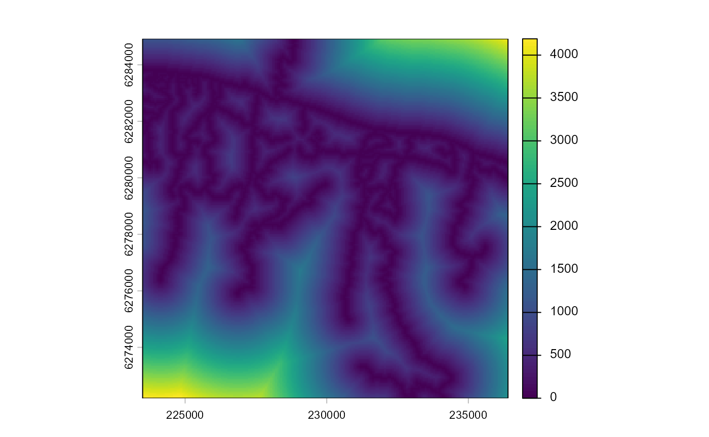
The different matching covariates can be easily collated into a
format that can serve as input to the control-impact matching with the
collate_matching_layers() function. This function handles
the necessary spatial processing of the different spatial input layers,
which may have different coordinate systems or spatial resolutions.
matching_input = collate_matching_layers(impact_control_cands, vars_list=list(dem_matching, landcover_matching, roadsDist_matching))The function test_multicollinearity() plots a
correlation matrix of the matching covariates, reports their Variance
Inflation Factor (VIF), and allows the user to iteratively identify and
remove highly multicollinear covariates. In our example, VIF values for
all covariates are low (<5), so we choose to keep all of them in the
matching.
matching_input = test_multicollinearity(matching_input)We then perform the control-impact matching with the
matchCI() function using propensity score matching (default
method), and select 10 control pixels for each impact pixel (argument
ratio) with replacement (argument replace),
meaning that a control pixel can be paired with several impact
pixels.
matching_output <- matchCI(matching_input,
ratio=10, replace=TRUE)The function evaluate_matching() performs some standard
assessments of the matching output. Under the default parameters, the
function generates plots of the covariate distribution, and a Love plot
of Standardized Mean Differences for control and impact sites before and
after matching. From the output of the matching analysis, we can see
that the absolute Standardized Mean Difference after matching is below
the threshold of 0.1 for the propensity score distance, only barely
above this threshold for a few individual covariates. Based on these
outputs we can continue our analysis with the current matching output,
as we do here, or reject the matching and attempt matching with
different matching parameters or covariates.
evaluate_matching(matching_output)
#> Balance Measures
#> Type Diff.Adj
#> distance Distance -0.0000
#> elevation Contin. 0.0488
#> slope Contin. -0.1147
#> northness Contin. -0.0086
#> eastness Contin. 0.0721
#> landcover_Trees Binary 0.0000
#> landcover_Crops Binary 0.0000
#> landcover_Built area Binary 0.0000
#> landcover_Bare ground Binary 0.0000
#> landcover_Rangeland Binary 0.0000
#> dist_roads Contin. 0.0471
#>
#> Sample sizes
#> Control Treated
#> All 20436. 691
#> Matched (ESS) 3569.68 691
#> Matched (Unweighted) 4614. 691
#> Unmatched 15822. 0
#> Press <Enter> to continue.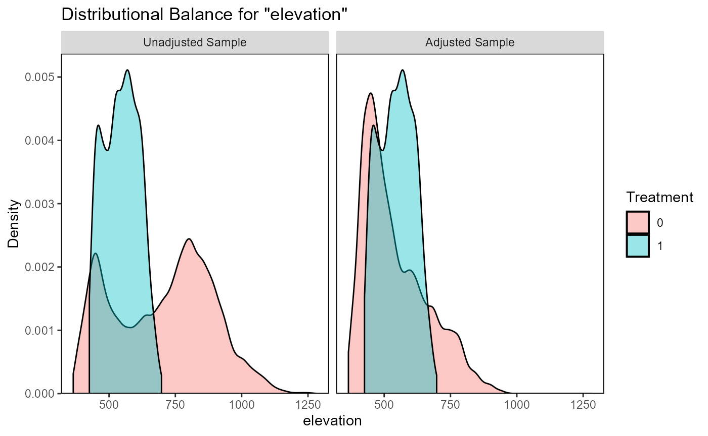
#> Press <Enter> to continue.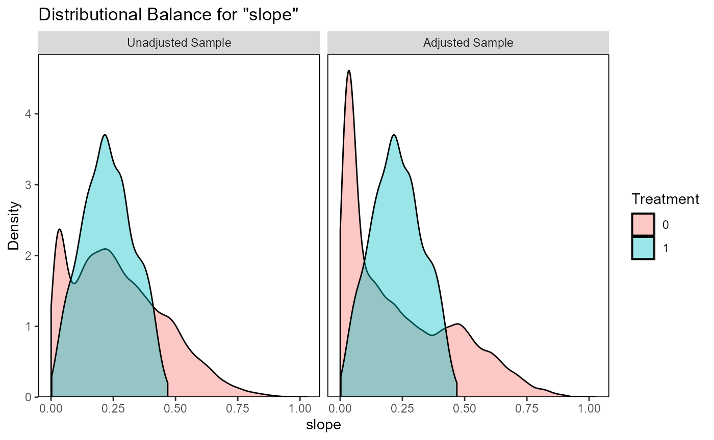
#> Press <Enter> to continue.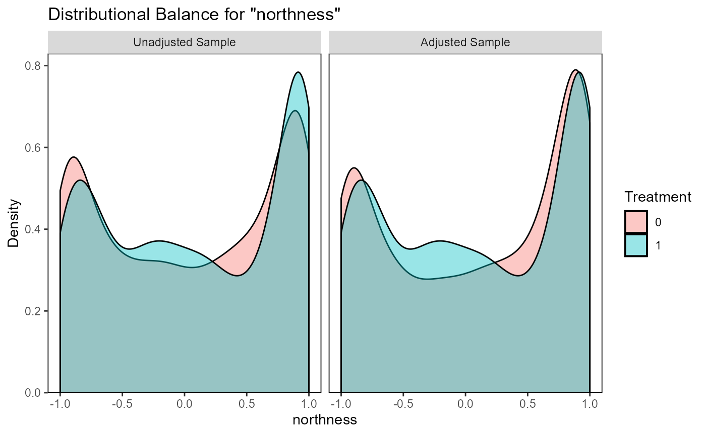
#> Press <Enter> to continue.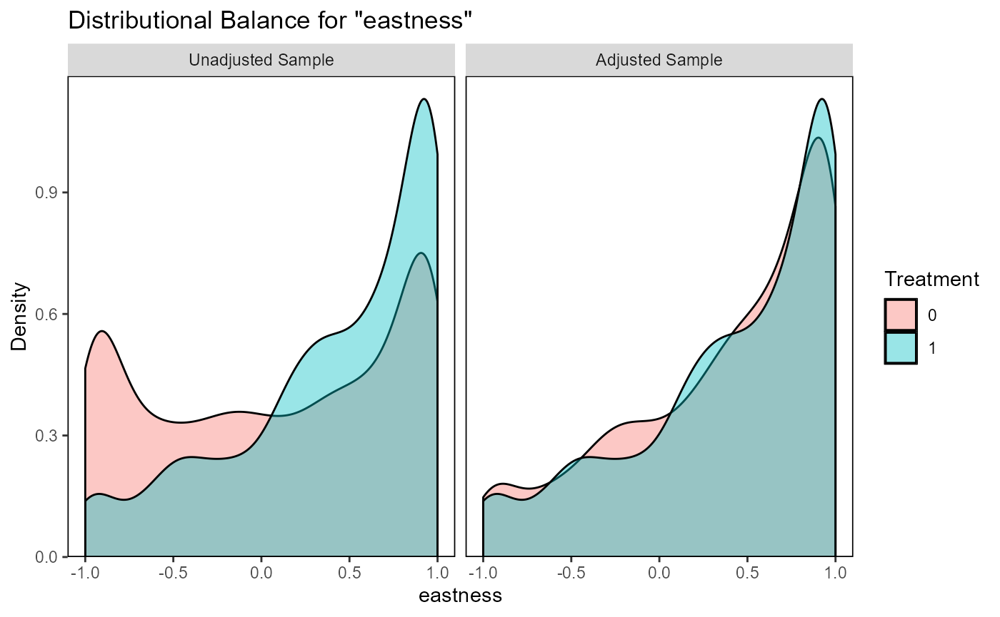
#> Press <Enter> to continue.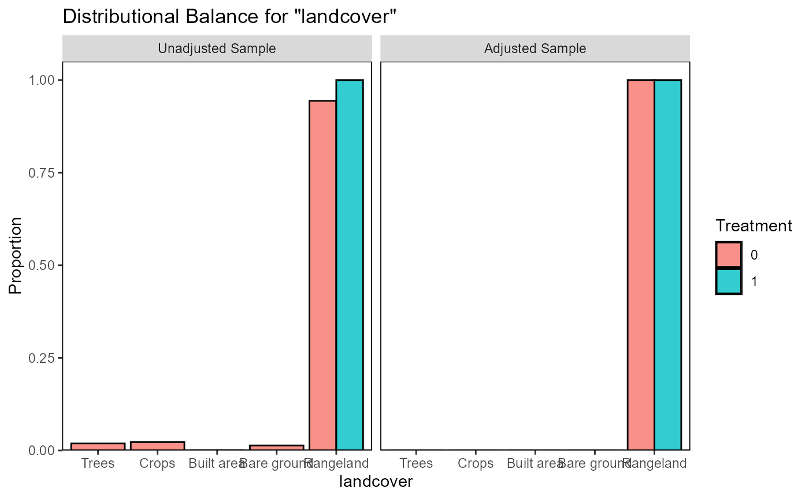
#> Press <Enter> to continue.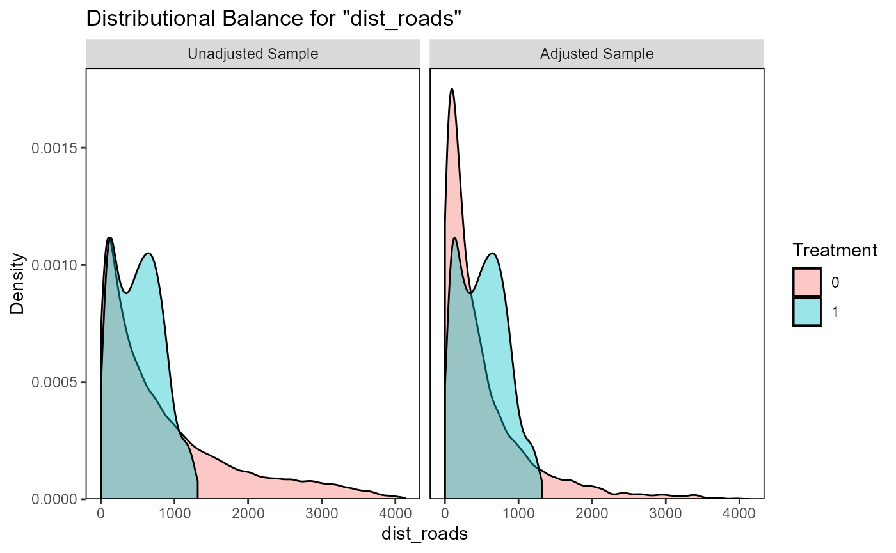
#> Press <Enter> to continue.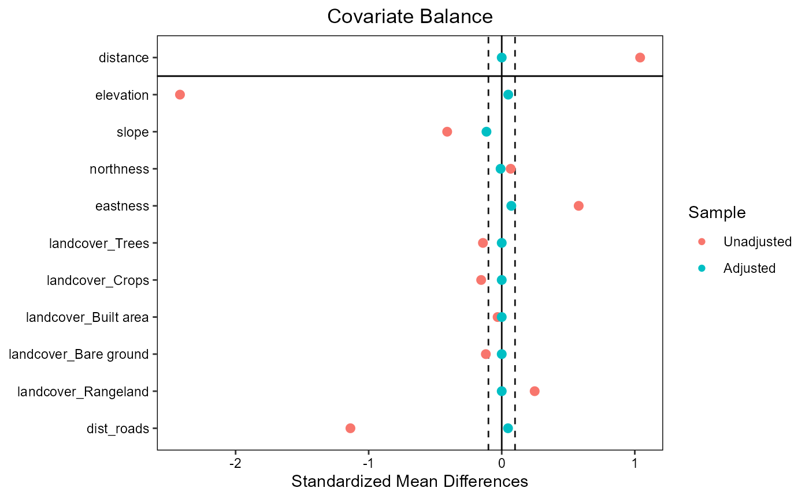
#> Press <Enter> to continue.Impact assessment
Remotely sensed observables
We here chose Landsat Normalized Difference Vegetation Index (NDVI) as the metric to use in the impact evaluation. NDVI is indicative of vegetation “greenness” and could therefore inform us whether a large scale revegetation effort was successful. The Landsat programme has been running for several decades and is therefore a useful data source for impact evaluation of past interventions. Landsat data are available from several cloud platforms. We here use Microsoft’s Planetary Computer, which allows querying with the SpatioTemporal Asset Catalog (STAC) language.
stac_endpoint <- as.endpoint("PlanetaryComputer")
stac_collection <- as.collection("Landsat", stac_endpoint)The timeframes over which conservation or restoration impacts are assessed will depend on the application and study site. Assuming we want to evaluate the impact of the Baviaanskloof revegetation from the 5-year periods before and the 5-year after the intervention year, we can first generate yearly NDVI time series for all impact and candidate control pixels:
vi_before <- eo_VI_yearly.stac(impact_control_cands, "NDVI",
endpoint=stac_endpoint, collection=stac_collection,
years=seq(year-10, year-1, 1),
months = 3:5,
maxCloud=60)
vi_after <- eo_VI_yearly.stac(impact_control_cands, "NDVI",
endpoint=stac_endpoint, collection=stac_collection,
years=seq(year+1, year+10, 1),
months = 3:5,
maxCloud=60)In the above code, we specified that we want to make a pixel-based
NDVI composite image for each year, using for each pixel and each year
the median value from the images acquired in the months March until May
that have a cloud cover below 60%. The function
eo_VI_yearly.stac() above generates proxy data cubes, which
don’t contain any data but describe the dimension of the object. Data
retrieval and calculations are only performed when the data values
contained in these objects are needed. Working with data cubes has the
advantage that unnecessary calculations are avoided for bands, time
steps and/or coordinates that are not used in later steps. This can be
extremely useful when dealing with large areas from which only limited
data has to be extracted, e.g., sparse monitoring location distributed
over a continental-scale area. In such a case you do not want to process
data wall-to-wall over the continental scale, but only over these sparse
locations. In our Baviaanskloof example, however, we only cover a
geographically small area with a relatively dense cover of impact and
candidate control units. In such case it can be useful to transform the
data cubes to SpatRaster objects (from terra
package) with the as.SpatRaster() function. Doing this
downloads and processes all data and reads the resulting composite
images into memory (or writes them to temporal files).
vi_before <- as.SpatRaster(vi_before)
vi_after <- as.SpatRaster(vi_after)
plot(vi_before, main=paste0("NDVI - ",seq(year-10, year-1, 1)))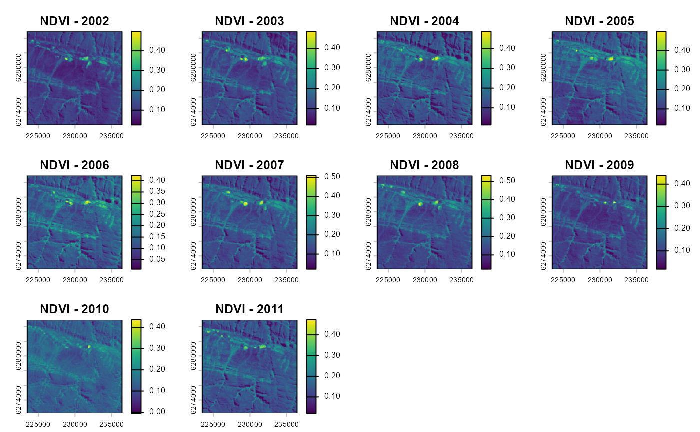
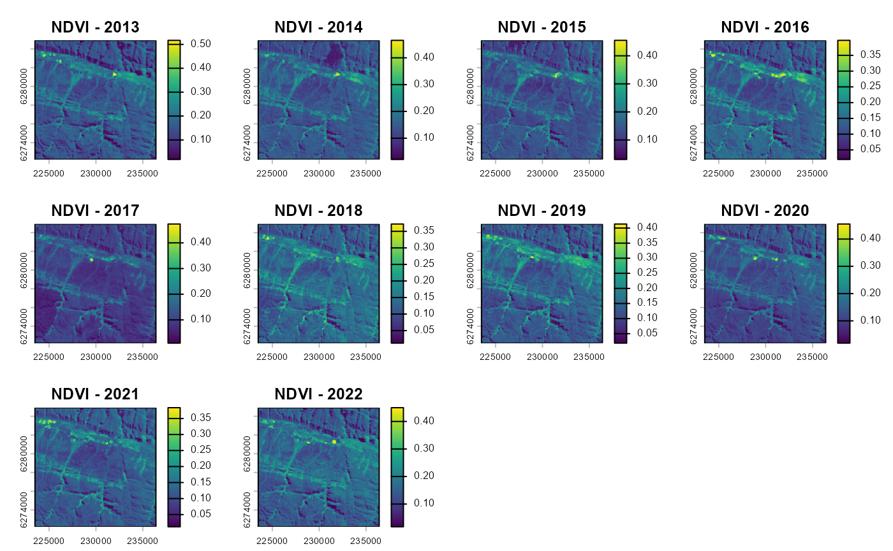
To transform these time series into simple metrics that can be used
in a BACI analysis, we here calculate average value and trend (change in
NDVI/year) over the time series before and after intervention with the
calc_ts_metric() function. This basic time series analysis
is included in the spatialBACI package, but user can easily
implement their own analyses, as long as these return raster layers of
the evaluation variable of interest before and after intervention.
avgtrend_before <- calc_ts_metrics(vi_before)
avgtrend_after <- calc_ts_metrics(vi_after)BACI contrast and p-value
To run the BACI analysis, we need to provide the matched
control-impact pairs (output of matchCI()) and the raster
datasets of the before and after period to the
BACI_contrast() function. The BACI analysis will be
performed for all layers in the before and
after layers, which in our example are both the average and
trend over the time series.
baci_results <- BACI_contrast(matching_output, before=avgtrend_before, after=avgtrend_after)The results of the BACI analysis can be viewed by printing the data.table associated to the output object. The data.table shows, for each impact unit and each evaluation variable, the BACI contrast and p-values. BACI contrast values smaller than zero indicate a positive effect of the revegetation intervention.
head(baci_results$data)
#> Key: <subclass>
#> subclass cell treatment contrast.average p_value.average contrast.trend
#> <fctr> <int> <num> <num> <num> <num>
#> 1: 1 18158 1 -0.007516017 0.107309678 -5.215998e-06
#> 2: 2 18373 1 -0.007124912 0.001719528 -1.234128e-06
#> 3: 3 18374 1 -0.006553027 0.036084266 -1.076089e-06
#> 4: 4 18375 1 -0.000707540 0.871349236 -3.731212e-06
#> 5: 5 18588 1 -0.002613761 0.677131688 -7.347847e-06
#> 6: 6 18589 1 -0.002799080 0.489423545 -6.619877e-06
#> p_value.trend
#> <num>
#> 1: 0.14678868
#> 2: 0.66389019
#> 3: 0.57750778
#> 4: 0.10941389
#> 5: 0.03418171
#> 6: 0.02101184The BACI results can also be plotted on a map, here with non-significant BACI contrast masked out. If desired, the pixel-based results can now be aggregated to different spatial levels, e.g., the revegetation site.
plot(baci_results$spat["contrast.average"] |> trim(),
range=baci_results$spat["contrast.average"] |> minmax() |> abs() |> max() |> rep(2)*c(-1,1),
col=hcl.colors(50, palette = "RdYlBu", rev = TRUE))
maskImg <- classify(baci_results$spat["p_value.average"], rcl= matrix(ncol=3, data= c(0,0.05, NA, 0.05,1,1), byrow = TRUE))
plot(maskImg,
col=c('grey90'),
add=TRUE,
legend=FALSE)
lines(project(impact_sites, baci_results$spat))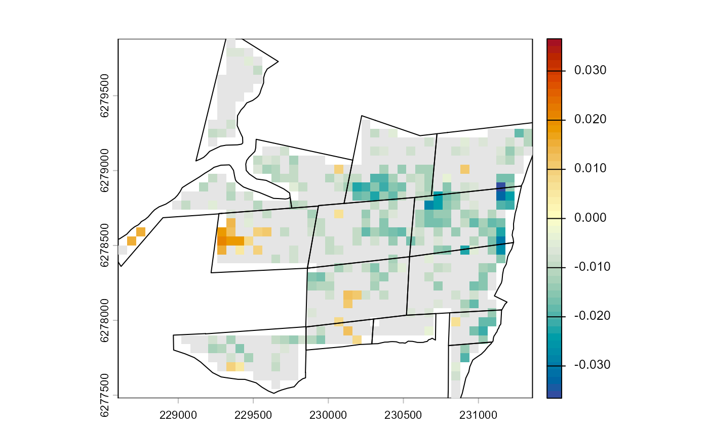